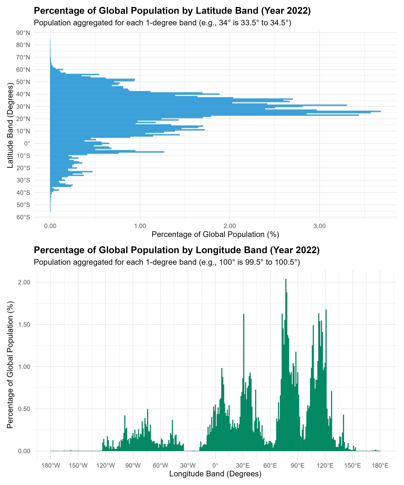

Global Population by Latitude and Longitude, 1990-2020
A custom coordinate transformation approach using sf, rnaturalearth, and ggplot2 to overlay population data on world maps
World Bank Data
A4 Size Viz
Governance
Demographics
Public Health
Geocomputation
Maps
Author
Aditya Dahiya
Published
November 2, 2025
About the Data
The GlobPOP dataset (GlobPOP GitHub Repository) is a comprehensive 33-year (1990-2022) global gridded population product generated through cluster analysis and statistical learning. The data, which has a spatial resolution of 30 arcseconds (approximately 1km), is provided in GeoTIFF format for easy integration and analysis, featuring two key population formats: ‘Count’ and ‘Density’. The primary, continuous GlobPOP 1990-2022 dataset can be freely accessed on Zenodo (Zenodo Data Access). Researchers can find the methodology and initial scope (1990-2020) detailed in the corresponding article published in Scientific Data (Sci Data 11, 124 (2024)). For a visual and comparative understanding of the data’s temporal accuracy, an interactive web application (GlobPOP ShinyApp) for time-series analysis is also available. Specific citation links are provided for the methodology Code (Code Citation on Zenodo) and the Updated Dataset version 3.0 (Updated Dataset Citation on Zenodo).
Two world maps show population distribution by one-degree latitude and longitude bands. Horizontal (latitude) and vertical (longitude) bars represent the percentage of global population residing in each band as of 2020. Colors indicate absolute change in contribution from 1990 to 2020: red bars mark regions whose share declined, green shows increases, and yellow indicates stable contributions. Secondary axes display population percentages, while primary axes show geographic coordinates, allowing readers to identify specific regions experiencing demographic shifts.
How I made this graphic?
This visualization was created entirely in R using a custom coordinate transformation workflow. World map data was obtained from the {rnaturalearth} package and processed using {sf} for spatial operations, including st_wrap_dateline() to handle polygons crossing the antimeridian at ±180° longitude. Rather than using geom_sf(), the spatial geometries were converted to simple x-y coordinate tibbles and rendered with geom_polygon(), allowing for a custom scaling system where latitude (-90° to 90°) maps to 0-100 and longitude (-180° to 180°) maps to 0-200, preserving the 2:1 aspect ratio of the EPSG:4326 projection. Population data from the GlobPOP dataset was aggregated by one-degree latitude and longitude bands using {terra} for raster processing, then transformed to match the custom coordinate system. The bar charts were overlaid using geom_col() with a diverging color scale from {paletteer} to show absolute changes in population contribution. Final plot composition was achieved with {patchwork}, combining both latitude and longitude visualizations with shared legends and annotations using {ggtext} for markdown-formatted text elements.
Loading required libraries, data import & creating custom functions
Code
# Data Import and Wrangling Toolspacman::p_load( tidyverse, # Data Wrangling and Plotting scales, # Nice scales for ggplot2 fontawesome, # Icons display in ggplot2 ggtext, # Markdown text support ggplot2 showtext, # Display fonts in ggplot2 colorspace, # Lighten and darken colours patchwork, # Combining plots together magick, # Image processing and editing terra, # Handling Rasters in R tidyterra, # Plotting Rasters with ggplot2 sf # Handling geometric objects)# world_lat_lon_pop_chart# Import Data from downloaded directory# 1990 to 2022 year Global Population Density 30 sec arc resolution# Set Working Directory to a temporary one ---------------------------# rast_2022 <- terra::rast("GlobPOP_Count_30arc_2022_I32.tiff") |> # # Reduce the granularity of the data to make it easier on computation and good to plot also# terra::aggregate(fact = 10)# # rast_2022 |> terra::crs() |> str_view()# ggplot() +# geom_spatraster(data = rast_2022)
Visualization Parameters
Code
# Font for titlesfont_add_google("Roboto",family ="title_font") # Font for the captionfont_add_google("Saira Extra Condensed",family ="caption_font") # Font for plot textfont_add_google("Roboto Condensed",family ="body_font") showtext_auto()# A base Colourbg_col <-"white"seecolor::print_color(bg_col)# Colour for highlighted texttext_hil <-"grey40"seecolor::print_color(text_hil)# Colour for the texttext_col <-"grey30"seecolor::print_color(text_col)line_col <-"grey30"# Define Base Text Sizebts <-80mypal1 <- paletteer::paletteer_d("rcartocolor::SunsetDark")mypal2 <- paletteer::paletteer_d("rcartocolor::ag_GrnYl", direction =-1)# Caption stuff for the plotsysfonts::font_add(family ="Font Awesome 6 Brands",regular = here::here("docs", "Font Awesome 6 Brands-Regular-400.otf"))github <-""github_username <-"aditya-dahiya"xtwitter <-""xtwitter_username <-"@adityadahiyaias"social_caption_1 <- glue::glue("<span style='font-family:\"Font Awesome 6 Brands\";'>{github};</span> <span style='color: {text_hil}'>{github_username} </span>")social_caption_2 <- glue::glue("<span style='font-family:\"Font Awesome 6 Brands\";'>{xtwitter};</span> <span style='color: {text_hil}'>{xtwitter_username}</span>")plot_caption <-paste0("**Data:** GlobalPOP dataset, Liu, Cao, Li, et al."," | **Code:** ", social_caption_1," | **Graphics:** ", social_caption_2)rm( github, github_username, xtwitter, xtwitter_username, social_caption_1, social_caption_2)
Annotation Text for the Plot
Code
plot_title <-"Mapping humanity: Population Distribution (1990-2020)"plot_subtitle <-"The global demographic center of gravity is shifting. Northern temperate zones (above 30°N latitude) are losing their share of world population, while tropical and subtropical regions between 0° and 30°N—which have historically dominated—are growing fastest. In terms of longitude, East Asia's contribution declined significantly from 1990 to 2020, while the Middle East, South Asia, and Africa saw the greatest increases. Humanity is becoming more concentrated in fewer latitudes and longitudes than ever before."|>str_wrap(110)str_view(plot_subtitle)inset_text <-"<b>About the Data:</b><br>The GlobPOP dataset is a comprehensive 33-year (1990-2022) global gridded<br>population product generated through cluster analysis and statistical learning.<br>The data, which has a spatial resolution of 30 arcseconds (approximately 1km),<br>is provided in GeoTIFF format for easy integration and analysis, featuring two<br>key population formats: 'Count' and 'Density'. The primary, continuous GlobPOP<br>1990-2022 dataset can be freely accessed on Zenodo. Researchers can find the<br>methodology and initial scope (1990-2020) detailed in the corresponding article<br>published in Scientific Data."str_view(inset_text, pattern ="<br>")
Exploratory Data Analysis - for 1 year as an example
Code
# Calculation of Population Distribution by Latitude and Longitude# 1. Prepare data and get total global population# Convert the SpatRaster to a tibble with coordinates (x=lon, y=lat) and population value,# removing NA values (e.g., oceans)pop_data <- terra::as.data.frame(rast_2022, xy =TRUE, na.rm =TRUE) |> dplyr::as_tibble()# The population column name is retrieved dynamically from the raster objectpop_col_name <-names(rast_2022)# Calculate the total global population from the processed datatotal_global_pop <-sum(pop_data[[pop_col_name]])# 2. Population by Latitude Bandpop_by_latitude <- pop_data |># Round latitude (y) to the nearest integer degree to define the 1-degree band (e.g., 34 is 33.5 to 34.5) dplyr::mutate(lat_band =round(y)) |># Group by the latitude band dplyr::group_by(lat_band) |># Sum population for each band dplyr::summarise(pop_in_band =sum(.data[[pop_col_name]]),.groups ="drop" ) |># Calculate percentage relative to the total global population dplyr::mutate(percent_global_pop = (pop_in_band / total_global_pop) *100 ) |># Sort to see the most populated bands first dplyr::arrange(desc(percent_global_pop))# 3. Population by Longitude Bandpop_by_longitude <- pop_data |># Round longitude (x) to the nearest integer degree to define the 1-degree band dplyr::mutate(lon_band =round(x)) |># Group by the longitude band dplyr::group_by(lon_band) |># Sum population for each band dplyr::summarise(pop_in_band =sum(.data[[pop_col_name]]),.groups ="drop" ) |># Calculate percentage relative to the total global population dplyr::mutate(percent_global_pop = (pop_in_band / total_global_pop) *100 ) |># Sort to see the most populated bands first dplyr::arrange(desc(percent_global_pop))# 4. Create and Save Plots for Visualization# Plot for Latitude Distributionlatitude_plot <- pop_by_latitude |>ggplot(aes(y = lat_band, x = percent_global_pop)) +geom_col(fill ="#56B4E9", color ="#0072B2", linewidth =0.2,orientation ="y" ) +labs(title ="Percentage of Global Population by Latitude Band (Year 2022)",subtitle ="Population aggregated for each 1-degree band (e.g., 34° is 33.5° to 34.5°)",y ="Latitude Band (Degrees)",x ="Percentage of Global Population (%)" ) +# Custom scale to show N/S for clarityscale_y_continuous(breaks =seq(-90, 90, by =10),labels =function(x) paste0(abs(x), "°", if_else(x >0, "N", if_else(x <0, "S", ""))) ) +scale_x_continuous(labels = scales::label_number(accuracy =0.01)) +theme_minimal(base_size =14) +theme(plot.title =element_text(face ="bold"))# Plot for Longitude Distributionlongitude_plot <- pop_by_longitude |>ggplot(aes(x = lon_band, y = percent_global_pop)) +geom_col(fill ="#009E73", color ="#006449", linewidth =0.2) +labs(title ="Percentage of Global Population by Longitude Band (Year 2022)",subtitle ="Population aggregated for each 1-degree band (e.g., 100° is 99.5° to 100.5°)",x ="Longitude Band (Degrees)",y ="Percentage of Global Population (%)" ) +# Custom scale to show E/W for clarityscale_x_continuous(breaks =seq(-180, 180, by =30),labels =function(x) paste0(abs(x), "°", if_else(x >0, "E", if_else(x <0, "W", ""))) ) +scale_y_continuous(labels = scales::label_number(accuracy =0.01)) +theme_minimal(base_size =14) +theme(plot.title =element_text(face ="bold"))# Combine the plots using patchwork and savecombined_plot <- latitude_plot / longitude_plotggsave(filename = here::here("data_vizs","world_lat_lon_pop_chart_1.png" ),plot = combined_plot, width =10, height =12, dpi =300)

Figure 1
Data Wrangling - To get data for multiple years
Code
# Credits: Gemini 2.5 # This script performs a multi-year analysis of global population distribution# by calculating the percentage of population residing within each 1-degree band# of latitude and longitude for the years 1990, 1995, 2000, ..., 2020.# ----------------------------------------------------------------------# 1. SETUP AND CONFIGURATION# ----------------------------------------------------------------------# Define the years to analyzeyears_to_analyze <-seq(1990, 2020, 5)# ----------------------------------------------------------------------# 2. CORE ANALYSIS FUNCTION# ----------------------------------------------------------------------#' Analyzes population distribution by 1-degree bands for a given year's raster file.#'#' @param year Integer representing the year (e.g., 1990).#' @return A list containing two tibbles: 'latitude_data' and 'longitude_data',#' each with population percentages and the 'year' column. Returns NULL#' if the raster file for the year is not found.analyze_pop_for_year <-function(year) {# 2.1 File Handling filename <-paste0("GlobPOP_Count_30arc_", year, "_I32.tiff")message("Processing year: ", year, " (File: ", filename, ")")if (!file.exists(filename)) {warning("File not found for year ", year, ": ", filename, ". Skipping analysis for this year.")return(NULL) }# 2.2 Load and Aggregate Raster rast_year <- terra::rast(filename) |># Aggregate to reduce computation time, matching the fact = 10 from initial setup terra::aggregate(fact =10)# Get the name of the population layer pop_col_name <-names(rast_year)# 2.3 Convert to Tibble and Calculate Global Total pop_data <- terra::as.data.frame(rast_year, xy =TRUE, na.rm =TRUE) |> dplyr::as_tibble()# Ensure the population column is numeric for summing pop_data <- pop_data |> dplyr::mutate(!!pop_col_name :=as.numeric(.data[[pop_col_name]])) total_global_pop <-sum(pop_data[[pop_col_name]])# 2.4 Population by Latitude Band lat_results <- pop_data |># Round latitude (y) to the nearest integer degree for the 1-degree band dplyr::mutate(band =round(y)) |> dplyr::group_by(band) |> dplyr::summarise(pop_in_band =sum(.data[[pop_col_name]]),.groups ="drop" ) |> dplyr::mutate(percent_global_pop = (pop_in_band / total_global_pop) *100,year =as.factor(year) # Store year as factor for plotting ) |> dplyr::rename(latitude = band)# 2.5 Population by Longitude Band lon_results <- pop_data |># Round longitude (x) to the nearest integer degree for the 1-degree band dplyr::mutate(band =round(x)) |> dplyr::group_by(band) |> dplyr::summarise(pop_in_band =sum(.data[[pop_col_name]]),.groups ="drop" ) |> dplyr::mutate(percent_global_pop = (pop_in_band / total_global_pop) *100,year =as.factor(year) # Store year as factor for plotting ) |> dplyr::rename(longitude = band)return(list(latitude_data = lat_results, longitude_data = lon_results))}# ----------------------------------------------------------------------# 3. EXECUTION AND COMBINATION# ----------------------------------------------------------------------# Apply the function to all years and collect resultsall_results <- purrr::map(years_to_analyze, analyze_pop_for_year) |> purrr::compact() # Remove NULL entries if any files were missing# Separate and combine the latitude and longitude resultsall_lat_data <- all_results |> purrr::map_df("latitude_data")all_lon_data <- all_results |> purrr::map_df("longitude_data")# ----------------------------------------------------------------------# Latitude Summary# ----------------------------------------------------------------------all_lat_data_summary <- all_lat_data |># Ensure year is numeric for easy filtering dplyr::mutate(year_num =as.numeric(as.character(year))) |># 1. Filter for the start (1990) and end (2020) years dplyr::filter(year_num %in%c(1990, 2020)) |># 2. Select key columns dplyr::select(latitude, year_num, percent_global_pop) |># 3. Pivot wider to compare 1990 and 2020 side-by-side tidyr::pivot_wider(names_from = year_num,values_from = percent_global_pop,names_prefix ="pop_pct_" ) |># 4. Calculate the change metrics from 1990 to 2020 dplyr::mutate(# Relative change in the percentage contribution: ((2020 - 1990) / 1990) * 100change_contribution = dplyr::case_when( pop_pct_1990 ==0~NA_real_, # Avoid division by zeroTRUE~ ((pop_pct_2020 - pop_pct_1990) / pop_pct_1990) *100 ),change_contribution_absolute = pop_pct_2020 - pop_pct_1990 ) |># 5. Select and rename final columns for clarity dplyr::rename(pop_pct_1990 = pop_pct_1990,pop_pct_2020 = pop_pct_2020 ) |>left_join( all_lat_data |>filter(year ==2020) |>select(latitude, percent_global_pop) ) |># Transform the latitude data to match the world map coordinate systemmutate(# Transform latitude from -90:90 to 0:100 scaley_scaled = (latitude +90) /180*100,# Transform percent to 0:150 scale for x-axis (horizontal bars)# Assuming max percent_global_pop is 4% (mapping 4% to 150)x_scaled = percent_global_pop *150/4 )# all_lat_data_summary |> # pull(y_scaled) |> range()# # all_lat_data_summary |> # pull(percent_global_pop) |> range()# # all_lat_data_summary |> # pull(x_scaled) |> range()# ----------------------------------------------------------------------# Longitude Summary# ----------------------------------------------------------------------all_lon_data_summary <- all_lon_data |># Ensure year is numeric for easy filtering dplyr::mutate(year_num =as.numeric(as.character(year))) |># 1. Filter for the start (1990) and end (2020) years dplyr::filter(year_num %in%c(1990, 2020)) |># 2. Select key columns dplyr::select(longitude, year_num, percent_global_pop) |># 3. Pivot wider to compare 1990 and 2020 side-by-side tidyr::pivot_wider(names_from = year_num,values_from = percent_global_pop,names_prefix ="pop_pct_" ) |># 4. Calculate the change metrics from 1990 to 2020 dplyr::mutate(# Relative change in the percentage contribution: ((2020 - 1990) / 1990) * 100change_contribution = dplyr::case_when( pop_pct_1990 ==0~NA_real_, # Avoid division by zeroTRUE~ ((pop_pct_2020 - pop_pct_1990) / pop_pct_1990) *100 ),change_contribution_absolute = pop_pct_2020 - pop_pct_1990 ) |># 5. Select and rename final columns for clarity dplyr::rename(pop_pct_1990 = pop_pct_1990,pop_pct_2020 = pop_pct_2020 ) |>left_join( all_lon_data |>filter(year ==2020) |>select(longitude, percent_global_pop) ) |># Transform the longitude data to match the world map coordinate systemmutate(# Transform longitude from -180:180 to 0:200 scalex_scaled = (longitude +180) /360*200,# Transform percent to 0:100 scale for y-axis# Assuming max percent_global_pop is 2% (mapping 2% to 100)y_scaled = percent_global_pop *50 )range(all_lon_data_summary$change_contribution, na.rm = T)range(all_lon_data_summary$change_contribution_absolute, na.rm = T)range(all_lat_data_summary$change_contribution, na.rm = T)range(all_lat_data_summary$change_contribution_absolute, na.rm = T)
Get a world map to display on coord_cartesian()
Code
library(sf)library(rnaturalearth)library(dplyr)library(ggplot2)# Get world countries as polygons, handle antimeridian, transform to EPSG:4326, convert to coordinates, and scaleworld_plot <-ne_countries(scale ="medium", returnclass ="sf") |>st_transform(crs =4326) |>st_wrap_dateline(options =c("WRAPDATELINE=YES", "DATELINEOFFSET=180")) |>st_cast("MULTIPOLYGON", warn =FALSE) |>st_cast("POLYGON", warn =FALSE) |>st_coordinates() |>as_tibble() |>rename(x = X, y = Y, group = L2) |>mutate(# Get the coordinate ranges in EPSG:4326x_min =-180,x_max =180,y_min =-90,y_max =90,# Calculate rangesx_range = x_max - x_min,y_range = y_max - y_min,# Scale y: -90° South = 0, +90° North = 100y_scaled = (y - y_min) / y_range *100,# Scale x: -180° West = 0, +180° East = 200 (2:1 aspect ratio)x_scaled = (x - x_min) / x_range *200 ) |>select(x = x_scaled, y = y_scaled, group)# Test plotg <-ggplot(world_plot, aes(x = x, y = y, group = group)) +geom_polygon(fill ="lightgray", color ="white", linewidth =0.1, ) +coord_equal() +theme_minimal() +labs(title ="World Map with Scaled Coordinates (EPSG:4326)",subtitle ="Y: 0-100 (90°S to 90°N), X: 0-200 (-180°W to 180°E)")ggsave(filename = here::here("data_vizs","world_lat_lon_pop_chart_2.png" ),plot = g,height =2.5,width =4,dpi =300)
Figure 2: This map displays country boundaries from Natural Earth data, rendered using a custom coordinate transformation. The original geographic coordinates (EPSG:4326/WGS84) were linearly scaled to fit a standardized grid where the y-axis spans 0-100 (corresponding to 90°S to 90°N latitude) and the x-axis spans 0-200 (corresponding to 180°W to 180°E longitude), preserving the 2:1 aspect ratio characteristic of the equirectangular projection. Geometries were processed through st_wrap_dateline() to properly handle polygons crossing the antimeridian (±180° longitude). Rather than using geom_sf(), the spatial data was converted to a simple tibble of x-y coordinates and rendered with geom_polygon().
The base plot
Code
# Create the latitude data plot with dual axeslat_plot <-ggplot() +# Add world map as backgroundgeom_polygon(data = world_plot,aes(x = x, y = y, group = group),fill ="gray75",alpha =0.5,color ="gray75",linewidth =0.3 ) +# Add population bars (horizontal)geom_col(data = all_lat_data_summary,mapping =aes(x = x_scaled,y = y_scaled,colour = change_contribution_absolute,fill = change_contribution_absolute ),width =0.6,linewidth =0.1,alpha =0.75,orientation ="y" ) +# In your plotannotate(geom ="richtext",x =195,y =2,label = inset_text,hjust =1,vjust =0,family ="body_font",size = bts /5,label.colour =alpha(bg_col, 0.6),lineheight =0.3,fill =alpha(bg_col, 0.6),colour = text_col ) + paletteer::scale_fill_paletteer_c("ggthemes::Red-Green-Gold Diverging",limits =c(-0.4, 0.4),oob = scales::squish,name ="Change in Contribution (%) to World Population between 1990 and 2020",labels =label_number(suffix =" %") ) + paletteer::scale_colour_paletteer_c("ggthemes::Red-Green-Gold Diverging",limits =c(-0.4, 0.4),oob = scales::squish,name ="Change in Contribution (%) to World Population between 1990 and 2020",labels =label_number(suffix =" %") ) +# Primary x-axis (bottom) shows longitudescale_x_continuous(name ="Longitude",breaks =seq(0, 200, 50),labels =c("180°W", "90°W", "0°", "90°E", "180°E"),limits =c(0, 200),# Secondary x-axis (top) shows percentagesec.axis =sec_axis(trans =~ . / (100*150/4),name ="% of world population in that latitude in year 2020",labels = scales::percent_format(accuracy =0.1) ) ) +# Y-axis shows latitudescale_y_continuous(name ="Latitude",breaks =seq(0, 100, 25),labels =c("90°S", "45°S", "0°", "45°N", "90°N"),limits =c(0, 100) ) +coord_equal(expand =FALSE,clip ="off" ) +theme_minimal(base_family ="body_font",base_size = bts ) +labs(subtitle ="Global Population Distribution by Latitude" ) +theme(# Overalltext =element_text(margin =margin(0,0,0,0, "mm"),colour = text_col,lineheight =0.3 ),# Axesaxis.line.y.left =element_line(linewidth =0.5,colour = text_col ),axis.line.x.top =element_line(arrow =arrow(length =unit(5, "mm") ),linewidth =0.5,colour = text_col ),axis.text.x.top =element_text(margin =margin(2,2,2,2, "mm") ),axis.text.y.left =element_text(margin =margin(3,3,3,3, "mm") ),axis.text.x.bottom =element_text(margin =margin(3,3,3,3, "mm") ),axis.title.y.left =element_text(margin =margin(1,1,1,1, "mm") ),axis.title.x.bottom =element_text(margin =margin(1,1,1,1, "mm") ),axis.title.x.top =element_text(margin =margin(1,1,1,1, "mm") ),plot.subtitle =element_text(margin =margin(2, 0, 2, 0, "mm"),vjust =0.5,colour = text_col,size =1.8* bts,hjust =0.5,family ="title_font",lineheight =0.3,face ="bold" ),# Panel and Legendpanel.grid =element_blank(),panel.grid.major.y =element_line(linewidth =0.3,colour ="black",linetype ="longdash" ),legend.position ="bottom",legend.margin =margin(0,0,0,0, "mm"),legend.box.margin =margin(0,0,0,0, "mm"),legend.key.width =unit(55, "mm"),legend.key.height =unit(4, "mm"),legend.title.position ="top",legend.text =element_text(margin =margin(1,0,0,0, "mm"),size = bts ),legend.title =element_text(margin =margin(2,0,2,0, "mm"),size = bts,hjust =0.5 ),plot.margin =margin(0,0,0,0, "mm") )# Create the longitude data plot with dual axeslon_plot <-ggplot() +# Add world map as backgroundgeom_polygon(data = world_plot,aes(x = x, y = y, group = group),fill ="gray75",alpha =0.5,color ="gray75",linewidth =0.3 ) +# Add population barsgeom_col(data = all_lon_data_summary,mapping =aes(x = x_scaled,y = y_scaled,colour = change_contribution_absolute,fill = change_contribution_absolute ),width =0.6,linewidth =0.1,alpha =0.75 ) + paletteer::scale_fill_paletteer_c("ggthemes::Red-Green-Gold Diverging",limits =c(-0.4, 0.4),,oob = scales::squish,name ="Change in Contribution (%) to World Population between 1990 and 2020",labels =label_number(suffix =" %") ) + paletteer::scale_colour_paletteer_c("ggthemes::Red-Green-Gold Diverging",limits =c(-0.4, 0.4),,oob = scales::squish,name ="Change in Contribution (%) to World Population between 1990 and 2020",labels =label_number(suffix =" %") ) +# Primary y-axis (left) shows scaled coordinates 0-100scale_y_continuous(name ="Latitude",breaks =seq(0, 100, 25),labels =c("90°S", "45°", "0°", "45°", "90°N"),# Secondary y-axis (right) shows percentagesec.axis =sec_axis(trans =~ . /5000,name ="% of world population in that longitude in year 2020",labels = scales::percent_format(accuracy =0.1) ) ) +# X-axis shows longitudescale_x_continuous(name ="Longitude",breaks =seq(0, 200, 50),labels =c("180°W", "90°W", "0°", "90°E", "180°E"),limits =c(0, 200) ) +coord_equal(expand =FALSE,clip ="off" ) +theme_minimal(base_family ="body_font",base_size = bts ) +theme(legend.position ="bottom",legend.key.width =unit(2, "cm"),legend.title.position ="top" ) +labs(subtitle ="Global Population Distribution by Longitude" ) +theme(# Overalltext =element_text(margin =margin(0,0,0,0, "mm"),colour = text_col,lineheight =0.3 ),# Axesaxis.line.x.bottom =element_line(linewidth =0.5,colour = text_col ),axis.line.y.right =element_line(arrow =arrow(length =unit(5, "mm") ),linewidth =0.5,colour = text_col ),axis.text.x.bottom =element_text(margin =margin(3,3,3,3, "mm") ),axis.text.y.left =element_text(margin =margin(3,3,3,3, "mm") ),axis.text.y.right =element_text(margin =margin(3,3,3,3, "mm") ),axis.title.y.left =element_text(margin =margin(1,1,1,1, "mm") ),axis.title.y.right =element_text(margin =margin(1,1,1,1, "mm") ),axis.title.x.bottom =element_text(margin =margin(1,1,1,1, "mm") ),plot.subtitle =element_text(margin =margin(2, 0, 2, 0, "mm"),vjust =0.5,colour = text_col,size =1.8* bts,hjust =0.5,family ="title_font",lineheight =0.3,face ="bold" ),# Panel and Legendpanel.grid =element_blank(),panel.grid.major.x =element_line(linewidth =0.3,colour ="black",linetype ="longdash" ),legend.position ="bottom",legend.margin =margin(0,0,0,0, "mm"),legend.box.margin =margin(0,0,0,0, "mm"),legend.key.width =unit(55, "mm"),legend.key.height =unit(4, "mm"),legend.title.position ="top",legend.text =element_text(margin =margin(1,0,0,0, "mm"),size = bts ),legend.title =element_text(margin =margin(2,0,2,0, "mm"),size = bts,hjust =0.5 ),plot.margin =margin(0,0,0,0, "mm") )
Adding QR code to the plot
Code
# A QR Code for the infographicurl_graphics <-paste0("https://aditya-dahiya.github.io/projects_presentations/data_vizs/",# The file name of the current .qmd file"world_lat_lon_pop_chart", ".html")# remotes::install_github('coolbutuseless/ggqr')# library(ggqr)plot_qr <-ggplot(data =NULL, aes(x =0, y =0, label = url_graphics) ) + ggqr::geom_qr(colour = text_hil, fill = bg_col,size =1.2 ) +annotate(geom ="text",x =-0.07,y =0,label ="Scan for complete Code used to make this graphic"|>str_wrap(12),hjust =1,vjust =0.5,family ="caption_font",colour = text_hil,size = bts /6,lineheight =0.25,fontface ="bold" ) +coord_fixed(clip ="off") +theme_void() +theme(plot.background =element_rect(fill =NA, colour =NA ),panel.background =element_rect(fill =NA,colour =NA ),plot.margin =margin(0, 10, 0, 0, "mm") )
# Saving a thumbnail for the webpageimage_read(here::here("data_vizs", "a4_world_lat_lon_pop_chart.png")) |>image_resize(geometry ="400") |>image_write(here::here("data_vizs", "thumbnails", "world_lat_lon_pop_chart.png"))
Session Info
Code
# Data Import and Wrangling Toolspacman::p_load( tidyverse, # Data Wrangling and Plotting scales, # Nice scales for ggplot2 fontawesome, # Icons display in ggplot2 ggtext, # Markdown text support ggplot2 showtext, # Display fonts in ggplot2 colorspace, # Lighten and darken colours patchwork, # Combining plots together magick, # Image processing and editing terra, # Handling Rasters in R tidyterra, # Plotting Rasters with ggplot2 sf # Handling geometric objects)sessioninfo::session_info()$packages |>as_tibble() |># The attached column is TRUE for packages that were # explicitly loaded with library() dplyr::filter(attached ==TRUE) |> dplyr::select(package,version = loadedversion, date, source ) |> dplyr::arrange(package) |> janitor::clean_names(case ="title" ) |> gt::gt() |> gt::opt_interactive(use_search =TRUE ) |> gtExtras::gt_theme_espn()
Table 1: R Packages and their versions used in the creation of this page and graphics